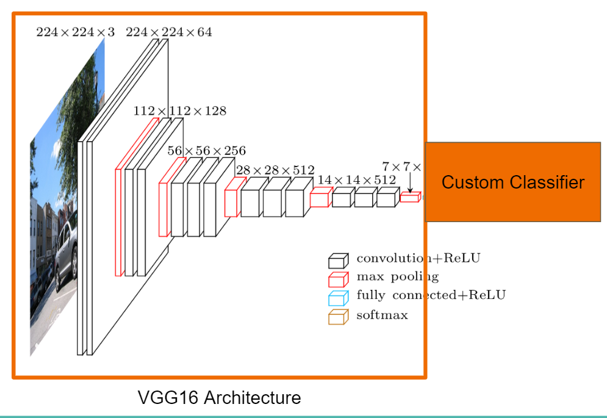
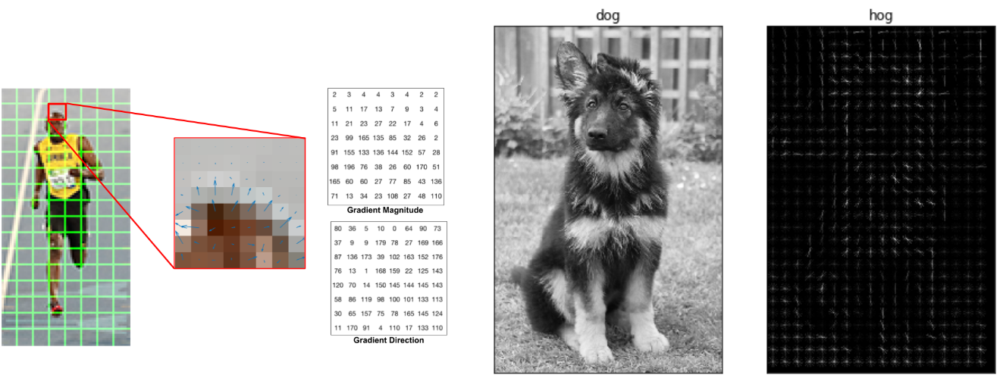
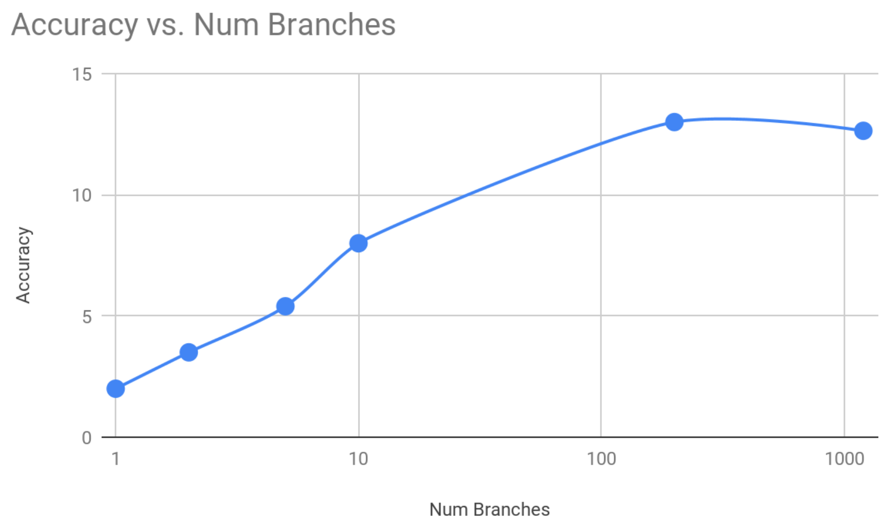
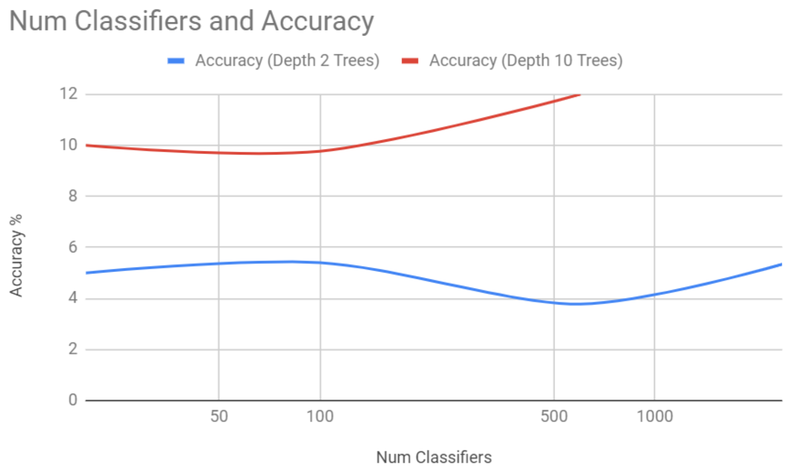
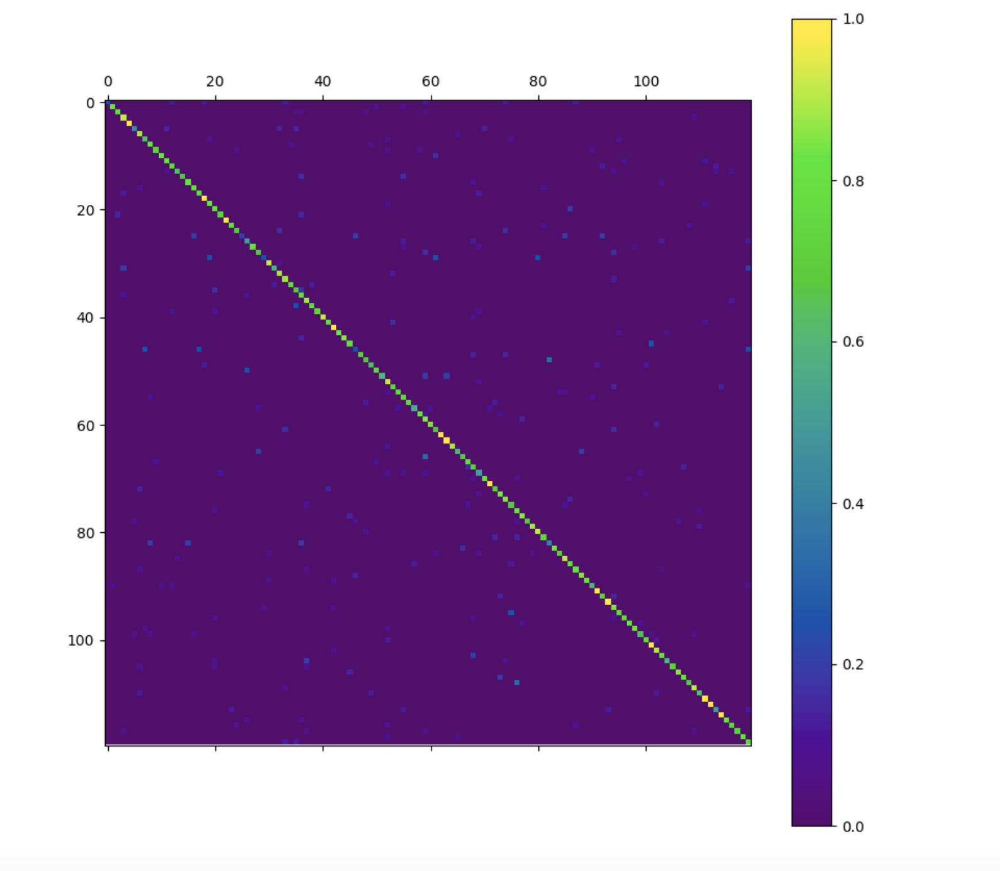
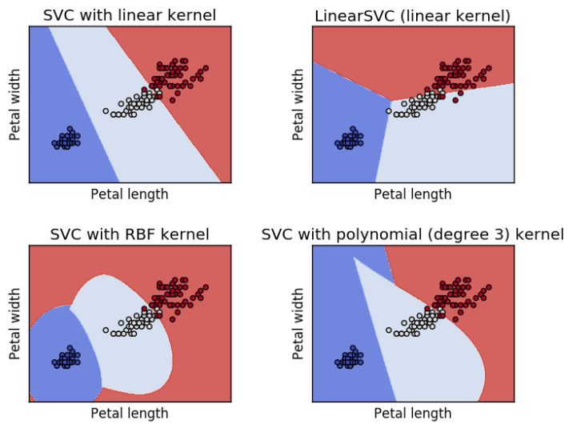
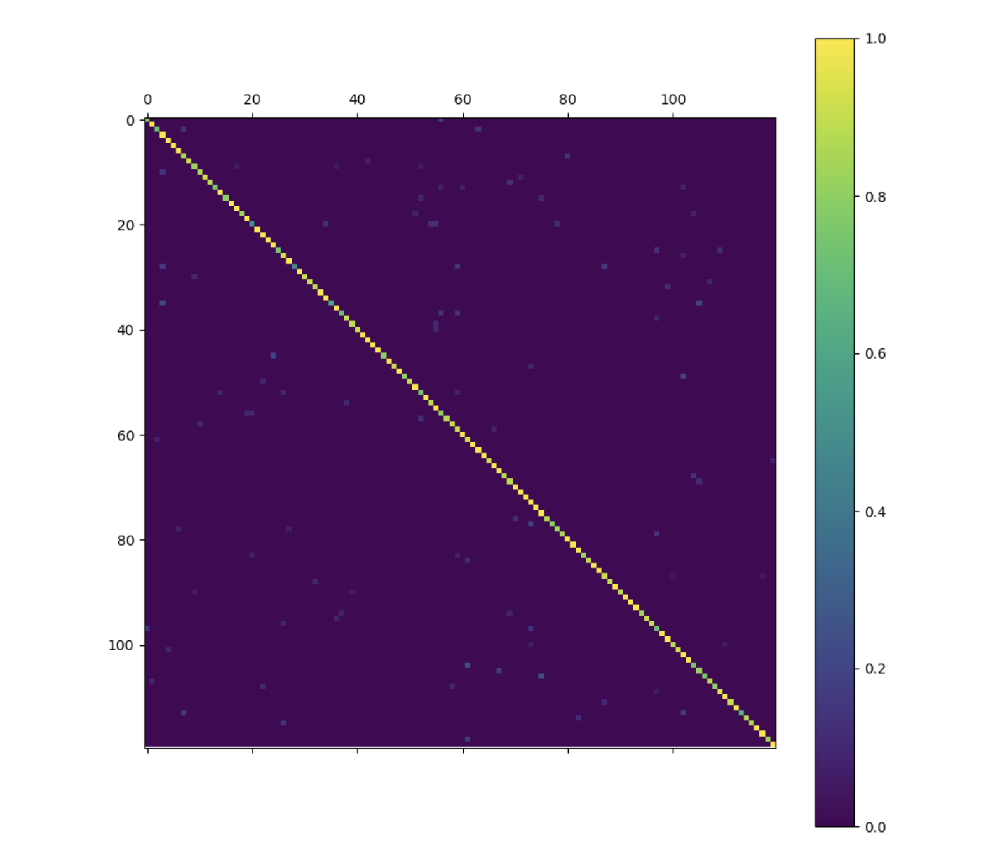
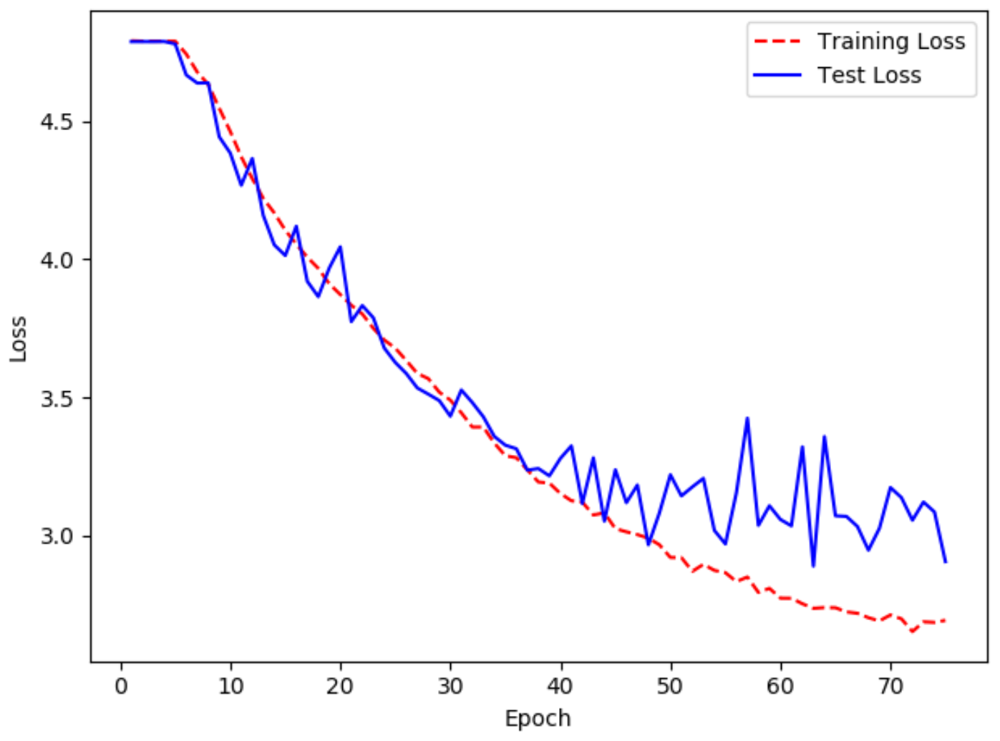
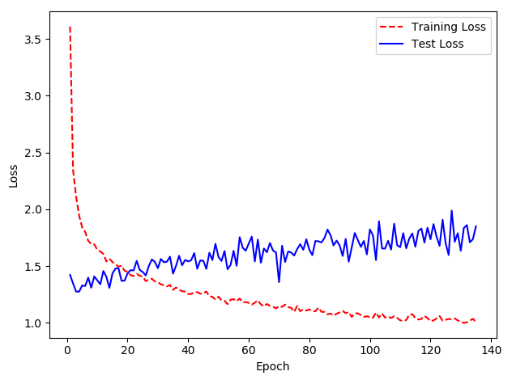

Before exploring the machine learning models, we first decided on various feature extractors used to train these models. The feature extractors we used are:
Pixels
We started with image pixels because they are the simplest features to extract and many models are able to extract all of the information from these pixels alone. This feature set is more suitable for complex models.
VGG16 features
The VGG16 is a pre-trained neural network that was used for image classification of over 1000 different classes. We stripped off the classification part (last few layers) and utilized the output as our feature vector. This vector consisted of 7x7x512 output layer which was converted into a feature vector. We expected this pre-trained model to perform better because it knows what features are important in an image for different object classification. It does however contain many features that are not dog related because of its initial classification task.
ResNet50 features
ResNet50 was similarly a pre-trained neural network but it consisted of a very different architecture to achieve similar performance on the ImageNet object classification task. This model is deeper but with fewer fully connected layers resulting in an overall smaller model with faster test image processing.
Histogram of Oriented Gradients
Histogram of gradients is a feature extractor that utilizes the gradients of a grayscale image to form a feature vector. These gradients are calculated by first finding all of the gradient directions at each pixel. These gradients are then combined within a sliding window of 4, 8x8 pixel regions. Inside these regions, the histogram of the gradient directions, magnitudes is calculated and forms the feature vector. This encodes shape information and is robust to image noise.
Using each of these feature vectors, we passed them through the following series of classifiers.
K-Nearest-Neighbor
We started with this basic classifier to see if our dataset was easily clustered into the different breeds. As expected however, this model performed very poorly. This was because each feature vector contained many background features which was true for all feature extractors. Many images contained people in the foreground or background, and some images included multiple dogs of the same breed. This made this simple classifier perform about the same as randomly guessing.
Decision Trees
The next model was the slightly more complex decision tree model. This was tried with the various feature extractors and with varying depths. This approach seemed promising initially with a decision tree of depth 120 reaching a test accuracy of around 13%. Adding additional depths did not increase the results beyond this 13%.
Adaptive Boosting
With the promising results from the decision trees we tried using Adaboost on decision tree stubs to augment their results. We used a variety of depths ranging from 1 to 100 but our best results were on depth 10 decision trees with an accuracy near 10%. This however was not significantly better than the single decision tree model. This leads us to believe that the decision trees that are formed are not very diverse and are all extracting the same features. Additionally due to computational complexity we were not able to extend beyond 1200 classifiers of depth 2. Less classifiers were used for deeper decision trees due to the training time.
Stochastic Gradient Descent (SGD)
After the failed results with the simpler classifiers we tried to use stochastic gradient descent to learn the separation between all of the breeds. The SGD was able to successfully classify many of the breeds using both the VGG16 features and the HOG features. Surprisingly, the HOG features performed better in this case reaching an accuracy of 77%. We believe this is because the VGG16 feature extractor was trained so all dogs were output as a single class while the rest of the features were used to identify the other 999 classes. This lost many of the complex features required to correctly identify similar dog breeds. This led us to believe that the HOG features may be the best for our classification problem.
Support Vector Machine
The support vector machine we built was based on Sci-kit learn SVC platform. In order to achieve multi-class classification, we utilized one-versus-rest method thus the SVM will contains 120 different hyperplane classification boundaries to identify the dog breed. We initialized the SVM using both VGG16 descriptor and the HOG descriptor. Unknowing the linearity of either descriptors, we could not determine if the data can be linearly classified or higher degree classification is need. Thus, a grid search with cross validation was implemented in order to find the optimal hyperparameters. These different parameters are:
By exhaustively searching all parameters, the best parameters calculated by validation is using HOG descriptor, RBF kernel, C of 1.0 and gamma of 0.001. The final test score of SVM was 90% accuracy. This confirmed our initial results from the SGD that HOG features were more informative than the VGG16 features without additional tuning.
 Convolutional Neural Network
Both Convolutional Neural Networks used data augmentation to artificially enlarge the dataset with image translations, rotations, and scale adjustments.
The CNN we built from scratch consisted of 2 dimensional convolutions where we adjusted the filter size, using the rectified linear unit for activation. After ‘processing’ the images with convolutions, they were placed through a global average pooling layer to flatten the data into one dimension using an average of the detected features. Finally, we fed the resulting parameters through fully connected layers with relu activation once again. These included a dropout rate which randomly selected nodes to ignore every iteration to prevent overfitting. The output layer was 120 nodes, each one representing a category, with softmax activation. We modified the hidden layers, hidden units, epochs, steps per epoch until the optimal model emerged. The optimal model consisted of five convolutional layers with an increasing filter size, followed by two layers of 512 fully connected nodes with 50% dropout rate each. Due to the small amount of data, this model only reached 30% accuracy compared to the others which were all much less.
We also created a CNN boosted with the Inception V3 pre-trained network. This network already recognizes some breeds of dogs, so our goal was to enhance the performance by removing the top layers and adding fully connected layers with the correct number of outputs. One fully connected layer of 512 nodes with 50% dropout and a final softmax layer of 120 fully connected nodes resulted in the best performance; however, the overall results with the pre-trained model were not improving. The model reached about 70% test accuracy consistently, which was much higher than the results yielded by CNN from scratch, but appeared to be slightly overfitting the data as the training loss decreased despite the test loss not decreasing. It may have helped to fine-tune individual layers of the Inception V3 model, but unfortunately due to the large size and long training time of the CNN model, this was not accomplished during the project.
Final Results
The summarized results from each of the algorithms and feature extractors are summarized below.
| Feature Extractor | Decision Tree | Adaboost | K-Means | SGD | SVM | Neural Network | Boosted CNN |
|---|---|---|---|---|---|---|---|
| Histogram of Gradients | 1% | 2% | N/A | 77% | 90% | N/A | N/A |
| VGG16 | 13% | 13% | 3% | 54% | 61% | 3% | N/A |
| Raw Image | 1.50% | 3% | N/A | 10% | 12% | 39% | 70% |
Conclusions
Through comparison of many different machine learning models, we learned more about what model is suitable for which classification task. For our dataset, the simple models provided insights on what features were useful but did not perform well for the task of classification. Because our dataset was very small in comparison to the number of breeds, many of the traditional methods did not perform as well as expected. Our CNN’s did not have enough training data to determine optimal weights without overfitting to the given examples and thus were not able to perform as well as the support vector approach. Additionally we learned that using pre-trained neural nets to create features is a promising approach for small datasets, but it is important to understand what features the model is generating. With additional tuning of the existing feature extractor we expect that we would be able to get CNN to perform better than the HOG + SVM approach. However for the relatively few parameters that needed tuning, the HOG + SVM approach was very successful without as much experimentation.